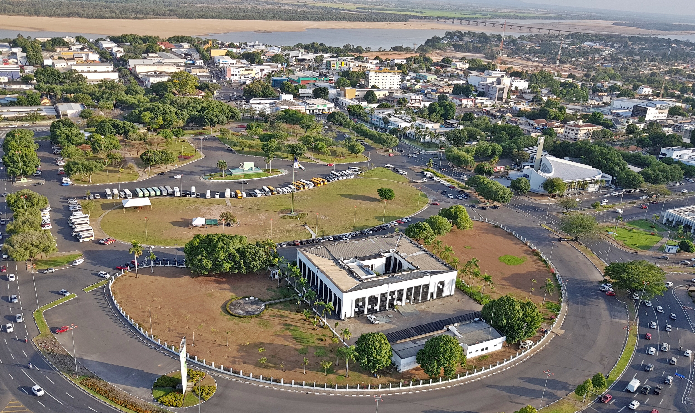
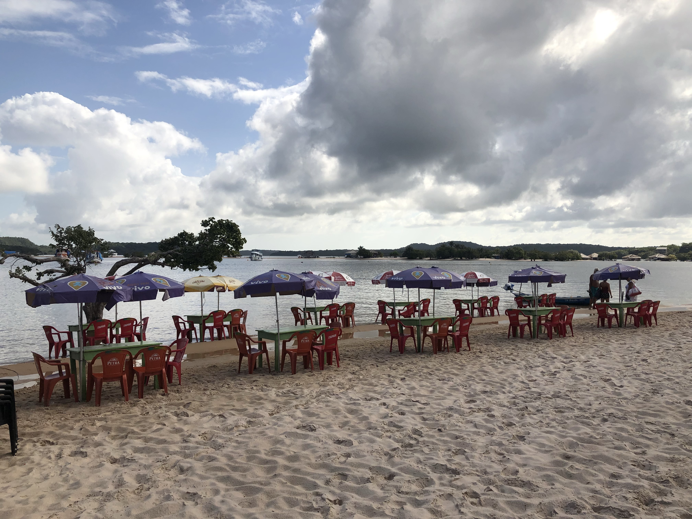
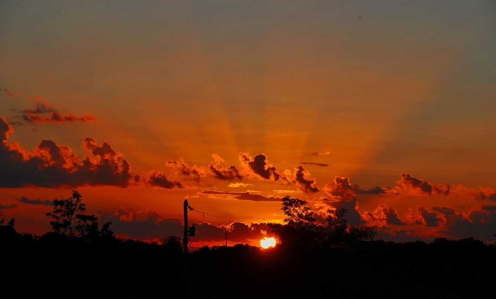
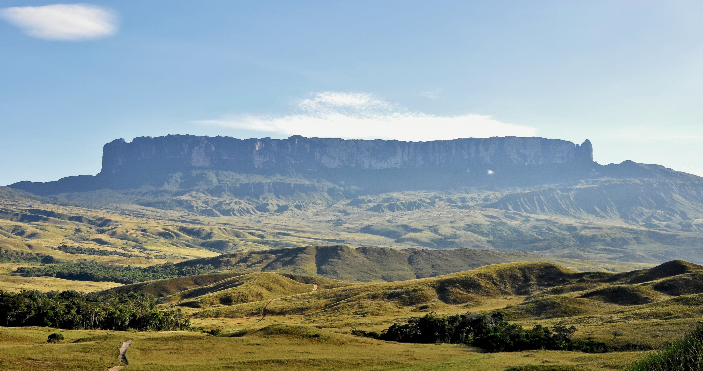
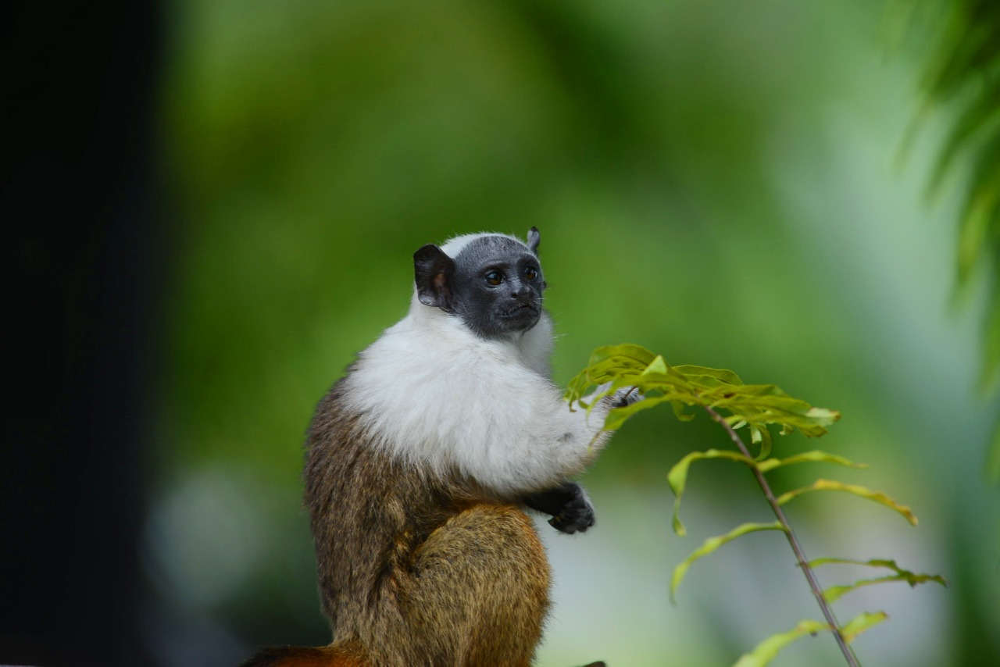
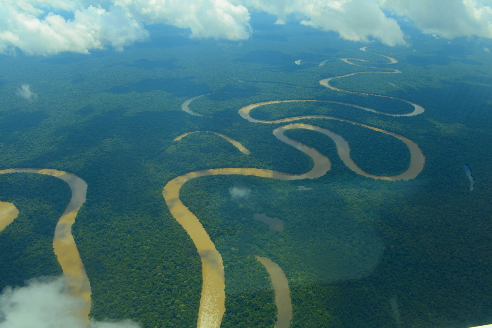

Tepuis que tocam as nuvens, savanas que parecem a África, o ponto mais setentrional do Brasil e os povos indígenas mais numerosos do país. Roraima é o estado menos conhecido e mais surpreendente da Amazônia.

Boa Vista é a única capital brasileira totalmente ao norte do Equador — e a mais setentrional do país. Planejada com uma malha radial única (como Paris), tem avenidas largas convergindo para o centro. O Rio Branco banha a cidade e no período da seca (outubro a março) revela praias fluviais visitadas por toda a população.

NaturezaNa época seca, o Rio Branco revela praias de areia branca com água limpa e quente. A Orla Taumanan é o coração da vida social boavistense — bares, restaurantes, esportes náuticos e o pôr do sol mais bonito de Roraima.
 Cultura
CulturaO maior museu do estado, com acervo sobre a pré-história indígena de Roraima, arte Macuxi e Wapichana, fauna e flora do estado e a história de ocupação do território roraimense.

NaturezaOs "lavrados" são savanas abertas que cobrem 17% do território de Roraima — únicas na Amazônia. Parecem a savana africana: horizon plano, grama amarela e cupinzeiros monumentais. Espécies de aves e mamíferos exclusivos desta paisagem.
Roraima é o maior produtor de arroz irrigado da Amazônia — as savanas do nordeste do estado são convertidas em arrozais que abastecem o Norte do Brasil. A pecuária bovina ocupa grandes extensões das savanas.
Roraima tem 52% de seu território em terras indígenas — a maior proporção de qualquer estado do Brasil. Os povos Macuxi, Wapichana, Yanomami e Ingarikó oferecem experiências únicas de turismo cultural e ecoturismo.

O Monte Roraima é um dos destinos mais extraordinários do planeta. O tepui (montanha tabular) de 2.875 metros de altitude, com um platô de 31 km², inspirou Arthur Conan Doyle a escrever "O Mundo Perdido" em 1912. É território sagrado dos povos Pemón e Ingarikó, e fica na tríplice fronteira Brasil-Venezuela-Guiana. A subida dura de 5 a 8 dias e é uma das trilhas mais desafiadoras e mais recompensadoras do Brasil.
A expedição começa na aldeia Paraitepui, terra indígena dos Ingarikó. São 4 dias de subida por campos abertos e floresta até o "ramp" — a única rampa de acesso ao platô. No topo, um mundo de nuvens, flores carnívoras e pedras negras.
 Natureza
NaturezaNo topo do Roraima há piscinas de água pura, labirintos de rocha negra, plantas carnívoras e espécies de animais encontradas em nenhum outro lugar do planeta. A rocha tem 1,8 bilhão de anos — entre as mais antigas da Terra.

Povos OrigináriosO Monte Roraima fica dentro da Terra Indígena Raposa Serra do Sol — o maior território indígena demarcado do Brasil (1,7 milhão de hectares). Guias Ingarikó conduzem as expedições, garantindo a sustentabilidade do turismo.

Pacaraima é a cidade na fronteira com a Venezuela — do lado venezuelano está Santa Elena de Uairén. É a principal rota de entrada dos venezuelanos no Brasil. A serra do Tepequém, com 1.000 m de altitude, fica próxima e oferece cachoeiras, fazendas de morango (único lugar de Roraima onde se cultiva) e pousadas de montanha.

Bonfim faz fronteira com a Guiana, separada pelo Rio Tacutu. Do lado guianense está Lethem. A região tem os lavrados mais extensos de Roraima — savanas abertas de beleza singular — e é ponto de partida para expedições às savanas e às comunidades Macuxi e Wapichana.
Às margens do Rio Branco, ponto de partida fluvial para o Parque Nacional do Viruá e áreas de pesca esportiva nos campos alagados.
Região de savanas e florestas de galeria. Povo Yanomami em territórios protegidos. Ecoturismo em desenvolvimento.
Vale do Rio Mucajaí, com roças familiares e comunidades quilombolas. Serra do Apiaú, com cachoeiras pouco visitadas.
Comunidades Macuxi às margens do Rio Amajari. Campos abertos com vistas espetaculares dos tepuis ao fundo.
Roraima tem 15 municípios. Explore cada canto desse território único.
Capital mais setentrional do Brasil, orla do Rio Branco e savana do Lavrado.
Sul de Roraima, colonização agrícola na BR-174, acesso à Terra Yanomami.
Acesso fluvial à Reserva Indígena Yanomami, pesca no Rio Branco.
Fronteira terrestre Brasil-Venezuela, na Serra do Pacaraima, ponto de entrada de venezuelanos.
Comunidades Wapichana e lagoas sazonais do Lavrado, pesca e criação de gado.
Fronteira com a Guiana, travessia para Georgetown pela ponte internacional.
Base de acesso ao Monte Roraima — o tepuí que inspirou 'O Mundo Perdido' de Conan Doyle.
Topo do Brasil — fronteira tripla BR/VE/GY e comunidades Ingarikó.
Lavrado de Roraima e comunidades Macuxi, próxima a Boa Vista.
Floresta de transição entre Amazônia e Cerrado, biodiversidade singular.
Pequena cidade com comunidades Wai-Wai e floresta densa ao sul.
Às margens do Rio Mucajaí, pecuária e pesca, colonização diversificada.
Fronteira com a Guiana, comunidades Macuxi e pecuária extensiva.
Ribeirão São Luiz e comunidades tradicionais no leste de Roraima.
Rio Branco e pequenas comunidades agropecuárias no centro de Roraima.
Créditos fotográficos: Wikimedia Commons (CC BY-SA) · © Chico Batata (uso autorizado) · Fotos podem ser de localidades próximas para fins ilustrativos.